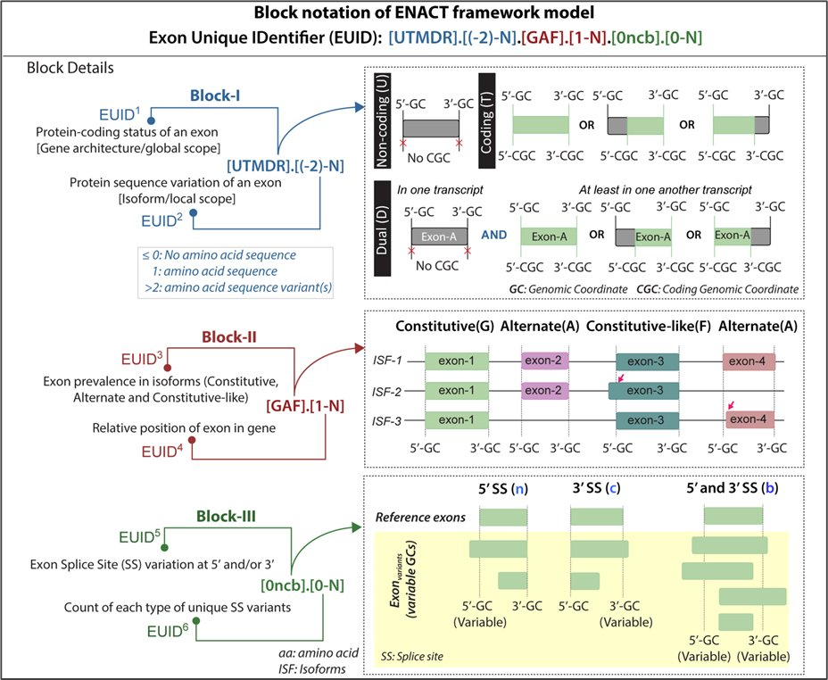

ENACT and ENACTdb · 2019–2025
Exon nomenclature and classification of transcripts
Focus. Distinguishing transcript differences by their predicted protein consequences.
Contribution. I developed the ENACT framework to classify exon attributes from a gene-centered view and map transcript changes to coding regions, amino-acid sequence changes, splice-site variation, and protein features.
Scientific use. ENACTdb associates exon variation with coding sequence and protein features, allowing transcript differences to be evaluated individually.
- Annotated protein-coding genes across C. elegans, D. melanogaster, D. rerio, M. musculus, and H. sapiens.
- Linked exon-level classes with coding status, amino-acid changes, splice-site shifts, domains, disordered regions, motifs, and related feature tracks.
- Published the framework in Genome Research and the database in Bioinformatics Advances.
